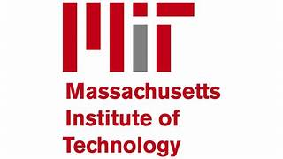

About Me
I study at the James Madison High School in Brooklyn. I am passionate about physics, electronics, programming, and research. I enjoy building devices using microcontrollers, exploring scientific problems, and applying technology to solve real-world challenges. My biggest dream is to enter MIT where I will study my favorite field.
Why MIT?
MIT is a place where innovation, engineering excellence, and hands-on research meet real-world impact. I want to be part of a community that pushes the boundaries of technology and transforms ideas into solutions.
I am especially inspired by researches in artificial intelligence and embedded systems, including the projects at the CSAIL lab. I am particularly interested in the magnetic transistor research for energy-efficient electronics led by Professors Frances Ross and Luqiao Liu, as well as the work on physically intelligent robots conducted by Professor Daniela Rus. These projects showcase MIT’s cutting-edge achievements in electronics and robotics and inspire me to further my studies and actively participate in research.
